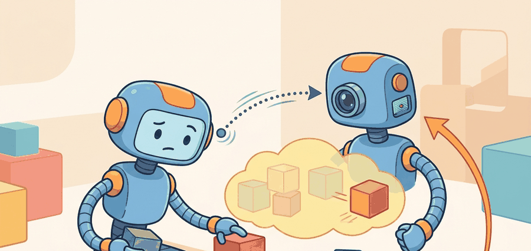

"A still image can tell you what exists; a video can tell you what is about to matter."
A Temporal Representation Learner

This section assumes familiarity with the JEPA latent-prediction loss introduced in section 40.1. The design decisions covered here (masking strategy, target encoder, temporal index) are extended in section 40.3, where V-JEPA gains an action-conditioning mechanism that connects representation learning directly to planning. The broader transfer-evaluation pattern introduced here recurs in Part V alongside diffusion-policy pretraining in section 22.3.
A robot arm hovering above a rolling ball must predict where that ball will be 200 ms from now, not what it looks like right now. I-JEPA and V-JEPA represent the critical fork in self-supervised representation learning: one masters spatial semantics from a single frame, the other forces a model to internalize motion, occlusion, and temporal causality without ever predicting pixels. That gap matters enormously for embodied AI, where the cost of a wrong action plan is physical. Here you will dissect both objectives, compare their masking strategies and target encoders, and build intuition for which representational invariances each one buys you.
Why The Image Case Is Not Enough
I-JEPA is already a strong test of semantic prediction because the model cannot succeed by copying pixels. But a robot does not act in static images. It acts in a world where occlusion clears, objects move, and contact depends on temporal continuity. A representation that is excellent at image semantics can still fail to preserve the motion cues needed for action timing or object tracking.
V-JEPA extends the JEPA objective from images to video. The context is now a spatiotemporal block of frames, and the target is a masked future or withheld region in a video clip. The central question is no longer "what is behind the mask?" but "what latent future is consistent with the observed motion and scene dynamics?"
I-JEPA Versus V-JEPA
The image formulation can be written as context-to-target latent regression over 2D patches. V-JEPA keeps the same latent-loss structure but swaps the input domain to video clips:
$$ \mathcal{L}_{\text{I-JEPA}} = \sum_{k=1}^{K}\left\lVert g_\theta(f_\theta(x_c), m_k) - \operatorname{sg}(f_\xi(x_{t,k})) \right\rVert_2^2 $$
$$ \mathcal{L}_{\text{V-JEPA}} = \sum_{k=1}^{K}\left\lVert g_\theta(f_\theta(v_c), m_k, \Delta t_k) - \operatorname{sg}(f_\xi(v_{t,k})) \right\rVert_2^2 $$
The extra temporal index $\Delta t_k$ matters. In video, the model must preserve object identity and temporal evolution: velocity, contact onset, object permanence under occlusion, and the difference between a transient appearance change and a real state change.
V-JEPA is not "I-JEPA plus more frames." It changes the latent invariances that matter. A good video representation must remain stable under appearance noise while still being sensitive to dynamic events that change the action plan.
Worked Shape Probe
Code Fragment 40.2.1 shows the bookkeeping difference between the image and video settings. The tensor shapes are simple, but they make the temporal burden visible.
# Compare the bookkeeping load in image JEPA and video JEPA.
# The video case adds time, which changes what a target mask means
# and what information the predictor must preserve.
image_tokens = (14, 14, 768)
video_tokens = (16, 14, 14, 768)
ijepa_context = (10, 10, 768)
ijepa_target = (4, 4, 768)
vjepa_context = (8, 10, 10, 768)
vjepa_target = (4, 4, 4, 768)
print({
"image_tokens": image_tokens,
"video_tokens": video_tokens,
"ijepa_target_volume": 4 * 4,
"vjepa_target_volume": 4 * 4 * 4,
}){'image_tokens': (14, 14, 768), 'video_tokens': (16, 14, 14, 768), 'ijepa_target_volume': 16, 'vjepa_target_volume': 64}The expected output should show that the video target volume is larger. That is the first hint that V-JEPA must solve a harder abstraction problem: more latent content, more possible futures, and stronger pressure to learn motion-aware features. Put it concretely: an I-JEPA target mask covers 16 patch tokens; the equivalent V-JEPA tube mask covers 64 tokens spanning time, space, and motion. The model must predict four times as much latent content, and that content now includes the causal structure of motion itself, not just the appearance of a hidden region.
When adapting an I-JEPA codebase to video, replace random 2D patch masking with spatiotemporal tube masks: each tube spans all frames at a fixed spatial location, which forces the predictor to reason across time rather than interpolate between visible neighboring frames. The V-JEPA authors use tubes of shape (T, h, w) where h and w are small patch blocks, and they mask roughly 90% of the video tokens in the target while keeping a short, spatially contiguous context block. Keeping 2D random masking produces representations that score well on static probes but degrade sharply on action-anticipation benchmarks because the model learns spatial inpainting rather than temporal prediction.
This probe takes 10 lines. A maintained PyTorch implementation does the same shape handling in a few tensor operations while also managing batching and mixed precision. The point of writing the tiny version first is to make it obvious that "video JEPA" means a different target geometry, not just a larger dataset.
When Each One Helps
| Setting | I-JEPA strength | V-JEPA strength |
|---|---|---|
| Static object ranking | Strong semantics with cheaper training | Often unnecessary unless motion context matters |
| Action anticipation | Weak, temporal cues are missing | Captures evolving intent and scene dynamics |
| Occlusion-heavy manipulation | Can encode object identity but misses temporal persistence | Better for tracking hidden objects through time |
| Robot video pretraining before planning | Useful initializer | Better aligned with downstream rollout prediction |
This is the main didactic lesson of the section: I-JEPA and V-JEPA are not competitors so much as different levels of abstraction. Use I-JEPA when you need robust spatial semantics and the downstream task is mostly snapshot-based. Use V-JEPA when the downstream policy depends on motion history or on predicting what remains true across a short temporal window.
A mobile manipulator that must grab a moving bin from a conveyor can use I-JEPA features to recognize the bin category, but that does not tell the arm where the handle will be 400 milliseconds later. V-JEPA-style features can encode the drift direction and the persistence of the handle under partial occlusion, which is exactly the signal a short-horizon controller needs.
What To Measure In Transfer
The right transfer test is not only linear probing accuracy. For I-JEPA, probe against tasks where a single frame carries the answer: object-category recognition on Open X-Embodiment still frames, wrist-camera grasp-point localization on Franka Panda demonstrations, or end-effector pose retrieval on BridgeData V2 snapshots. For V-JEPA, the probe must demand temporal content: action-anticipation on RT-X conveyor sequences (predicting the gripper state 400 ms out), state-change detection on contact-event clips from the LeRobot SO-100 arm dataset, and short-horizon rollout prediction on Boston Dynamics Spot navigation logs where the footing changes mid-stride. If the video representation does not outperform the image one on one of these motion-sensitive probes, you may be paying the video-training bill without buying temporal structure. The V-JEPA authors report that the jump from I-JEPA to V-JEPA on action-anticipation probes typically exceeds 8 percentage points on top-5 recall; gains smaller than that on your own robot dataset are a signal to revisit masking policy before committing to the video-pretraining budget.
1. Freeze the encoder checkpoint pretrained on robot video (Open X-Embodiment or LeRobot).
2. Run one static-semantic probe (grasp-point localization on held-out BridgeData V2 frames) and one temporal probe (400 ms action anticipation on RT-X conveyor sequences) on the same validation split, using a shared two-layer MLP head.
3. Compare I-JEPA and V-JEPA under identical head architecture and learning rate (1e-4, 50 epochs).
4. Promote V-JEPA only if the temporal probe improves by at least 5 percentage points in top-5 recall, enough to justify the roughly 3x pretraining compute cost versus I-JEPA at ViT-L scale.
Evaluation Contract
Code Fragment 2 below records the minimum contract for an I-JEPA versus V-JEPA transfer comparison.
# Record a matched transfer experiment for image and video JEPA.
# The same downstream head and split keep the comparison fair,
# so any gain can be attributed to temporal representation quality.
from dataclasses import asdict, dataclass
@dataclass
class TransferAudit:
image_encoder: str
video_encoder: str
probe_task: str
split: str
metric: str
accepted_winner: str
def as_row(self) -> dict[str, object]:
return asdict(self)
audit = TransferAudit(
image_encoder="ijepa_vith",
video_encoder="vjepa_vitl",
probe_task="short_horizon_action_anticipation",
split="held_out_conveyor_sequences",
metric="top5_future_action_recall",
accepted_winner="pending",
)
print(audit.as_row()){'image_encoder': 'ijepa_vith', 'video_encoder': 'vjepa_vitl', 'probe_task': 'short_horizon_action_anticipation', 'split': 'held_out_conveyor_sequences', 'metric': 'top5_future_action_recall', 'accepted_winner': 'pending'}The expected output is a record with `accepted_winner` still marked `pending`. That is healthy. You should not pre-declare V-JEPA as the winner until it proves that temporal pretraining improves the exact motion-sensitive behavior you care about.
A common mistake is to assume that more temporal data automatically yields a better control representation. In practice, a weak masking policy or a downstream task with little temporal content can make V-JEPA look unnecessarily expensive while adding little over I-JEPA. Consider a concrete case: a team pretrains V-JEPA on 16-frame clips of a warehouse robot but evaluates transfer solely on object-category recognition (a static-semantic task). The video model scores within noise of the I-JEPA baseline because neither temporal ordering nor motion persistence is tested. The failure is not in the model: it is in the evaluation contract. The temporal burden of video pretraining only pays off when the probe task actually requires the model to resolve what changed between frames, not merely what is present in them. If your best temporal probe (for example, short-horizon action anticipation or state-change detection) does not show a statistically meaningful gain over I-JEPA under a matched head and the same validation split, the video pretraining cost is likely unjustified for that deployment.
Current JEPA research is asking whether video pretraining can produce representations with enough intuitive physics to support planning and action anticipation without dense task labels. The emerging evidence is promising, but the bar for embodied systems is higher: the latent space must survive contact, occlusion, and intervention-heavy rollouts, not just benchmark classification.
Return to Section 40.1 for the core JEPA loss. Jump forward to Section 40.3 for the action-conditioned extension in V-JEPA 2. For motion-sensitive control policies, compare this representational route with the direct action-generation route in Chapter 22.
Can you name one downstream task where I-JEPA is probably sufficient and one where V-JEPA should win? Can you justify the answer in terms of temporal information rather than model size alone?
I-JEPA is often the cheaper semantic initializer. V-JEPA is the better candidate when the downstream task depends on motion continuity, anticipatory state estimation, or latent prediction under occlusion. A strong engineering pattern is to start with the image baseline, then justify the move to video with one matched temporal benchmark and one closed-loop rollout task.
I-JEPA is a strong snapshot memory. V-JEPA starts acting like a short movie memory with consequences.
I-JEPA and V-JEPA share the same latent-prediction philosophy, but V-JEPA earns its cost only when temporal information changes the downstream decision. The correct comparison is not image versus video in the abstract, it is static semantics versus motion-aware control value.
Design a matched probe suite that would fairly compare I-JEPA and V-JEPA for a bin-picking robot. Include one static task, one temporal task, the shared downstream head, and the acceptance rule for promoting the video representation.
Bibliography & Further Reading
Primary References And Tools
LeCun, Y.. "A Path Towards Autonomous Machine Intelligence." (2022). https://openreview.net/forum?id=BZ5a1r-kVsf
This position paper frames JEPA as a path toward predictive abstract representations. It gives the conceptual motivation for predicting in representation space rather than reconstructing every sensory detail.
Assran, M. et al.. "Self-Supervised Learning from Images with a Joint-Embedding Predictive Architecture." (2023). https://arxiv.org/abs/2301.08243
I-JEPA is the image-based foundation for the joint-embedding predictive idea. It is useful for understanding masking, target encoders, and representation prediction before moving to video.
Bardes, A. et al.. "V-JEPA: Revisiting Feature Prediction for Learning Visual Representations from Video." (2024). https://arxiv.org/abs/2404.08471
V-JEPA extends JEPA-style prediction to video. It grounds the chapter's distinction between predicting latent features and reconstructing pixel-level futures.
Meta AI. "Introducing the V-JEPA 2 World Model and New Benchmarks." (2025). https://ai.meta.com/blog/v-jepa-2-world-model-benchmarks/
The official V-JEPA 2 release discusses video-trained world models, benchmarks, and zero-shot robot-control claims. The chapter treats these as important frontier claims that need task-level verification.
Assran, M. et al.. "V-JEPA 2: Self-Supervised Video Models Enable Understanding, Prediction and Planning." (2025). https://arxiv.org/abs/2506.09985
The V-JEPA 2 paper connects self-supervised video pretraining with action-conditioned latent planning. It is the central technical reference for this chapter's JEPA-to-control bridge.